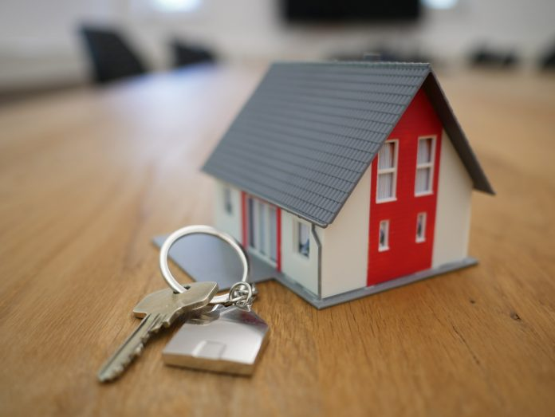
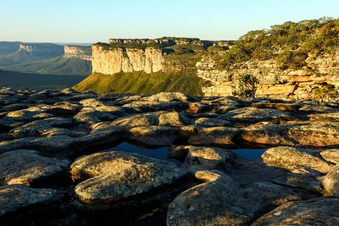

Casa própria

Um dos meus objetivos é conseguir comprar minha própria casa. Cresci em uma cidade pequena, Mira Estrela, e valorizo o quanto é importante ter um espaço que seja realmente seu, construído com o próprio esforço.
Não tenho em mente um modelo específico de casa, nem localização definida. Penso mais no aspecto que ter um lugar que seja próprio.
Conhecer mais do Brasil
Outra realização é mais simples, mas não menos importante: viajar e conhecer lugares diferentes dentro do próprio país. Como cresci em uma cidade pequena do interior, não tive muita oportunidade de conhecer outras regiões do Brasil, e isso é algo que desejo assim que tiver mais tempo e recursos.
Novamente: não tenho um destino específico em mente, mas lugares como a Chapada Diamantina e a cidade histórica de Ouro Preto podem ser destinos iniciais, seja pela natureza, seja pela arquitetura e história que carregam.
